In ricordo di nonno Teresio
Un ricordo di Valerio
Una prima versione è comparsa in parte su la Sentinella del Canavese il 31 dicembre 2018, cartacea e online.
«Geniale alter ego» di Natale Capellaro, «ex operaio che ne ripercorreva le orme», «capace di far fare alla meccanica cose stupefacenti»… (*)
Teresio Gassino—classe 1924 di Arè, figlio di artigiano fabbro—consegue il diploma di disegnatore nel 1942 presso il Centro Formazione Meccanici Olivetti, e già nel 1944 contribuisce ai primi progetti di macchine da calcolo del prodigio della progettazione meccanica in Olivetti, Natale Capellaro: «Mi ricordo il primo lavoro che Le diedi. Era il controllo di un mio studio su una camma della 14 che Lei sbagliò per una banale dimenticanza ma che mi diede nello stesso tempo la misura della Sua padronanza del disegno».
Nel 1945 è coordinatore tecnico dell’intero progetto MC14 e dal 1948 collabora direttamente con Capellaro alla progettazione di tutte le macchine da calcolo, partecipando dal 1951 a definire i modelli MC21, Divisumma, Tetractys, Audit e successivi. Per anni braccio destro di Capellaro, ne prende il posto a capo dell’Ufficio progetti macchine da calcolo e apparecchiature scriventi nel 1964, per lasciare già nel 1969: nel frattempo è sopraggiunta l’era elettronica.
Durante quel periodo, alla guida dei progettisti meccanici dell’Olivetti, Teresio lancia un’ultima sfida alla nuova tecnologia con la Logos 27, calcolatrice superautomatica, «certamente—nelle parole del celebre manager Elserino Piol—la più completa e performante macchina da calcolo meccanica mai realizzata al mondo», della quale «ogni dispositivo […] era un gioiello di genialità e creatività». Logica e matematica sono tradotte in lamiera, alberi rotanti, arpionismi, ingranaggi: 3.700 pezzi che viaggiano fino a 1.000 cicli al minuto, ai limiti di quella meccanica Olivetti «dei segnali deboli, non di forza, adatta a trasmettere e a manipolare la leggerezza dell’informazione». Complessa da costruire e mantenere, con il mercato ormai orientato verso l’elettronica, la Logos resta un’ode al futuro mai realizzato del calcolo meccanico.

Lasciata l’Olivetti, Teresio si trasferisce nei colli senesi e si dedica alla produzione del vino, che nel 1981 gli vale il premio nazionale Douja d’Or per la sua Vernaccia di San Gimignano “La Quercia di Racciano”. Ma all’ombra del vecchio albero non posa mai la matita. Ci abbandona nel 1998, e negli ultimi giorni in ospedale la tiene sempre salda nella sua mano, sul progetto incompiuto CS-2—una macchina emettitrice di assegni, portata avanti dal figlio Massimo.
È il 1953 quando Teresio affida il disegno della casa di Monte Navale, dove abiterà con sua moglie Ernesta e i loro figli, a Eduardo Vittoria, l’architetto del palazzo del Centro Studi ed Esperienze Olivetti, regno dei progettisti meccanici. Mi piace immaginare Teresio al tecnigrafo a tarda notte, al suono della sua amata musica classica, che scruta dalla finestra di casa le luci del Centro Studi, cercando ispirazione per un nuovo virtuosismo ai limiti della meccanica. Oggi quei suoi congegni sono custoditi dalla polvere dei musei: accrocchi metallici che evocano le complicazioni dell’alta orologeria e certi universi della fantascienza retrofuturista. E quei luoghi una volta animati da chi dava vita alle macchine raccontano ancora del futuro possibile.
A centodieci anni dalla fondazione della Fabbrica, nel 2018 le architetture olivettiane sono state riconosciute patrimonio UNESCO: progettata da Vittoria, tra loro figura Villa Gassino, la casa dove abitava il grande progettista scomparso quasi trent’anni fa—mio nonno Teresio.
(*) Virgolettati qui e oltre: Sandro Sartor, Via Jervis, n. 11, Elserino Piol, Il sogno di un’impresa, e un dattiloscritto inedito di Natale Capellaro.
Ivrea, novembre 2018
(rivisto nel luglio 2026)
Valerio